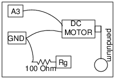

Schematic

A pendulum executes simple harmonic motion. If the anglular displacement
is plotted against time, we get a sine wave. But angle encoders are costly,
we can use a DC motor as angular velocity encoder, the induced voltage is
proportional to the instantaneous angular velocity.
Instructions
- The pendulum is attached to the axis of the motor.
- The induced DC voltage is proportional to the angular velocity.
- The signal is measured by A3. The 100 Ohm resistor between Rg and Ground,
sets an amplificaion factor of 1 + 10000/100 = 101, it is required since the
induced voltage is small.
- Oscillate the pendulum and press START button to record the data.
- If the signal is noisy, try rotating the whole body of the motor by several
degrees and try again.